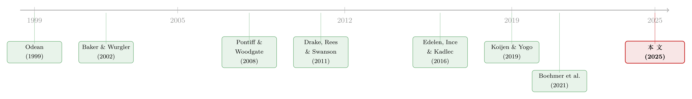

买卖双方各执一词：当 193 个异象告诉你「谁是聪明钱」
本文读的是 McLean, Pontiff & Reilly (2025, JFE)：把整个「因子动物园」浓缩成一个预测收益变量，再看九类市场参与者——散户、卖空者、公司、以及六类机构——各自站在了这个变量的哪一边。结论很扎心：公司和卖空者是聪明钱，他们卖掉低预测收益的股票、买进高预测收益的股票，事后被证明踩对了点；而散户系统性地站到了反面，机构整体上也是；散户的「逆向」交易，恰恰发生在异象最看好或最看空的那些股票上——他们亲手把错误定价又往里推了一把。
1 一个老问题，换一个问法
学术界关于「异象 (anomaly)」的文献，已经堆成了一座山。从账面市值比、动量，到应计、资产增长、利润率……几十年下来，被发现能预测股票横截面收益的变量数以百计，多到有人干脆给它起了个略带嘲讽的名字——因子动物园 (factor zoo)。
但有一个问题，这座山始终没怎么正面回答：这些异象收益，到底是谁在背后「付钱」？ 如果某只股票的预测收益很低、事后果然跌了，那么在它下跌之前，是谁高高兴兴地把它买了进来、最后接了盘？又是谁早早地把它出清、躲过了一劫？
这个问题之所以重要，是因为它直接关系到我们怎么理解错误定价。有效市场假说说，价格里已经包含了所有信息，没有人能系统性地占便宜；行为金融则说，市场里有「噪声交易者」在犯错，有「套利者」在纠错。可一旦你想把这套故事落到实处，立刻会发现自己缺一张「名单」：到底哪一类投资者扮演了犯错的角色，哪一类扮演了纠错的角色？
过去的研究不是没碰过这个问题，但它们大多是零敲碎打地碰：有人盯着机构（Edelen, Ince & Kadlec, 2016，用了 7 个异象），有人盯着卖空者（Drake, Rees & Swanson, 2011，用了 11 个异象）。问题在于，每个人手里只攥着一小撮异象、一两类投资者，拼出来的是一幅碎片化的图景。
McLean、Pontiff 和 Reilly 这篇文章想做的，是把这幅图一次性拼完整。
2 把整座动物园「压」成一个数
要把九类参与者放在同一把尺子上比，第一步是先有这把「尺子」。
作者的做法是：拿来 193 个横截面异象变量（取自 Chen & Zimmerman, 2021 的「开放资产定价」数据库，剔除掉那些本身就基于 13F、卖空、股票发行构造的异象，以免和后面要研究的交易变量循环论证），然后用一个自适应分组 LASSO (adaptive group LASSO) 把它们「揉」成一个变量——预测收益 (forecasted return)。
为什么是 LASSO，而不是简单地把 193 个变量加权平均？因为这 193 个变量彼此高度冗余、还可能有非线性。分组 LASSO 的好处，是它能在估计的同时做变量选择和收缩，把重叠的信息压扁、把噪声砍掉，最后吐出一个干净的、对每只股票每个月的「应得收益」的估计。这一步在精神上和 Freyberger, Neuhierl & Weber (2020) 用非参方法「解剖特征」是一脉相承的。
把整座因子动物园「收缩」成一个低维信号，本身就是近些年资产定价的一条主线。关于这条线的思路，可参见《压缩横截面：因子动物园的尽头，不是更少的因子，而是更聪明的收缩》。本文相当于把这个「收缩后的信号」当作一把现成的尺子来用。
有了这把尺子，剩下的事就清楚了：对每一类参与者，算出他们在「预测收益被测量」之前 1 年和 3 年里的持仓变化，再看这个持仓变化，和预测收益是同向还是反向。同向，说明你在买被看好的、卖被看空的——你站对了边；反向，则相反。
3 谁站在哪一边
接着，一个自然的问题是：九类人，到底各自站在哪一边？
作者把所有交易变量都统一符号，让「正值=好的方向」：比如 Firm Trading 为正表示公司在回购（减少在外股本），Short Seller Trading 为正表示空头在平仓。然后他们看每一类参与者的交易与预测收益的相关性，并报告了一组很有说服力的「拟合优度」式证据——这 193 个异象，到底能解释某一类人交易行为里多大的比例：
- 公司（股票发行/回购）：在 3 年的视角里，193 个异象解释了股票发行横截面变化的
36%。换句话说，预测收益最低的那批公司，恰恰是过去三年发行新股最凶的。公司，是九类人里和预测收益对得最齐的那一类。 - 卖空者：紧随其后。预测收益最低的股票，在通往「异象组合形成」的三年里，空头头寸积累得最多。
- 散户：站到了最差的位置。预测收益最低的股票，散户持股增加得最多——他们在拼命买那些异象判定为「该跌」的票。193 个变量合起来，解释了散户 3 年期交易变化的
32%。 - 机构（合计及六个子类）：整体上倾向于累积低预测收益的股票，但大多不显著；对每一类机构而言，193 个变量能解释的交易变化都在
10.5%以下。
光有相关性还不够。真正关键的一步在于：这些交易，事后到底赚没赚到钱？ 作者把股票按「某类人的交易」和「预测收益」各分成五档，做一个 5×5 的独立双重排序，看 25 个交叉组合的月均收益。
于是图景彻底清晰了：
- 公司和卖空者的交易，朝着预测收益指向的方向预测了未来收益——他们是聪明钱。
- 散户和机构的交易，却朝着相反的方向预测了收益。机构卖掉的高预测收益股票，事后涨了；散户买进的低预测收益股票，事后跌了。
4 反转：散户的「两副面孔」
但故事如果到这里就停了，那不过是又一篇「散户很傻」的论文。真正有意思的反转，藏在散户身上。
因为散户其实有两副面孔。
Boehmer, Jones, Zhang & Zhang (2021) 那篇名作发现：散户的周度交易失衡 (weekly trade imbalance)——也就是最近一周里买多于卖的净额——能正向预测收益。散户在短窗口里似乎有点「私人信息」，买什么涨什么。本文确认了这一点：周度失衡确实正向预测收益，而且这个预测能力在五个预测收益档位里全都成立，相当稳健。
可一旦你把散户的交易累积到 1 年、3 年，结论立刻翻转：长期累积的散户买入，反向预测收益——买得越多，跌得越惨。
这就出现了一个张力十足的画面：同样是散户，短期像是有信息的精明猎手，长期却是系统性的接盘侠。本文的贡献，是把这两副面孔的关系讲清楚了——它证明短期的正向预测，并不是因为周度失衡和预测收益正相关（恰恰相反，正的周度失衡也集中在低预测收益的股票上）；短期那点信息，与因子动物园所捕捉的信息基本是正交的。散户的长期之殇，与短期之得，是两回事。
更狠的一刀在后面。作者反过来问：预测收益这把尺子，在什么样的股票里最灵？ 答案是——在散户交易最密集的股票里最灵，尤其在 3 年的视角下；换成别的参与者，这个增强效应就没了。
这意味着什么？意味着异象策略很可能就是在「捡」散户制造出来的错误定价。散户在低预测收益的股票上拼命买、在高预测收益的股票上拼命卖，把价格推离基本面；异象策略反手做空前者、做多后者，赚的正是散户的钱。
顺便说一句，散户犯错并不是「全程犯错」，而是集中在两端。把股票按预测收益分五档，几乎所有参与者在中间那档（异象既不看多也不看空）里的交易都不怎么预测收益。真正的胜负手，发生在异象判定为「明显错配」的高、低两端——散户的长期亏损，也主要发生在这两端。
5 机构这边：被「高预测收益股票」拖累
那机构呢？传统印象里机构是「专业玩家」，可本文的结论延续了一条不那么光彩的旧线索：机构整体的交易也反向预测收益。
但本文把这件事拆得更细了。机构的糟糕表现，主要由高预测收益的股票驱动：机构常常卖掉那些预测收益高、事后果然涨上去的股票。在 1 年视角下，机构的（负向）收益预测只在最高预测收益档里显著；到了 3 年视角，则在最高的三档里都显著为负，而且预测收益越高，机构亏得越多。
六类机构里也各有各的难处（这些结果放在附录）：银行最差，在 1 年视角下五档里有四档显著跑输；共同基金、保险公司和「其他」机构也跑输，但只在较高预测收益的档位里；对冲基金和财富管理机构的（多头）交易则基本不预测收益。
这里有一个微妙之处值得点出来。对冲基金的多头不行，可它的空头却是聪明钱——本文发现卖空（业内多由对冲基金执行）站对了边。这恰好呼应了 Aragon & Martin (2012) 等人的观察：对冲基金在做空和衍生品上似乎更有「技能」，而在管理多头股票仓位时则未必。也可能，对冲基金的多头本就只是其空头的对冲腿，本来就不是用来「赚 alpha」的。
6 它打到了「需求体系」资产定价的软肋
这篇文章看似只是「数清楚谁站哪边」，但它顺手戳中了近年最热的一条理论线——需求体系资产定价 (demand system asset pricing)，即 Koijen & Yogo (2019) 开创的那套用持仓、弹性来理解资产价格的框架。
本文有两点直接的含义：
第一，关于「家庭部门」。 需求体系文献在估计投资者层面的需求时，常把「13F 报告持仓的残差」当作家庭部门。而近期不少研究（Koijen, Richmond & Yogo, 2023；Li, Sokolinski & Tamoni, 2023）发现，这个「家庭部门」是价格弹性最高的投资者之一——言下之意，是家庭在纠正别人造成的错误定价。可本文用 sub-penny 定价识别出来的真·散户，恰恰站在异象组合的错误一边、在制造而非纠正错误定价。这就意味着，那个高弹性的「家庭部门」里，真正出力的很可能不是散户，而是某些不报 13F 的别的玩家（比如某些外国机构或做市商）。
第二，关于「股本供给外生」。 需求体系做反事实时，通常假设在外股本（供给）是外生给定的（Koijen & Yogo, 2019 就是这样）。但本文明明白白地证明：公司的净发行决策，会随它的预测收益而系统性变化——预测收益低的公司更倾向发新股。那么在任何反事实演练里，股本供给本身就会变，把它钉死为外生是有问题的。这一点为「策略性股票发行」这条新兴研究（Tamburelli, 2024；Sammon & Shim, 2024）提供了直接的弹药。
这是本文最容易被忽视、却可能最有分量的贡献：它不是在和需求体系「抢饭碗」，而是在给它校准输入。如果「家庭部门残差」其实混入了反向交易的散户、如果供给并非外生，那么基于这些假设的弹性估计和反事实，都需要重新掂量。
7 数据：一把双刃剑
这把「九类人」的尺子能立起来，靠的是 2005 年后美国市场微观结构的一个副产品——Regulation NMS 下的 sub-penny 定价让散户单子「现了形」。这既是本文的底气，也是它的边界。
把数据交代清楚，是评估这类论文可信度的关键。
- 样本期：2006 年 10 月至 2021 年 12 月，共
183个月。下限卡在 2006 年 10 月，是因为散户识别依赖 Reg NMS 的实施。 - 观测单位：股票—月（firm-month）。
- 散户交易：按 Boehmer et al. (2021) 的方法，用成交价的亚分位 (sub-penny) 识别散户单——
Zit = 100 × mod(Pit, 0.01)，落在[0,0.4)或(0.6,1]的算散户单，(0.4,0.6)区间不计（避免把 pegged order 等误判为散户）；成交方向再按 Barber et al. (2024) 建议用同期报价中点来定。变量是「(散户买额−散户卖额)/在外股本」，再按 3 个月到 3 年加总。 - 机构交易：来自季度 SEC 13F 与 S12 数据，分成共同基金、对冲基金、银行、保险、财富管理、其他六类（银行/保险用 Bushee 的代码，对冲基金/财富管理用机构名称的文本规则）。
- 卖空：用 Compustat 的月末空头利息 (short interest) 变化、按在外股本标准化。
- 公司交易：按 Pontiff & Woodgate (2008) 和 McLean, Pontiff & Watanabe (2009) 的做法，用经拆股调整后的在外股本百分比变化度量。样本里公司 3 个月、1 年、3 年的
Firm Trading均值分别是−8.99%、−20.62%、−2.44%——负值代表净发行，可见样本期内平均而言公司是净发股票的。 - 过滤：剔除价格低于
$1的股票，只保留 NYSE/AMEX/NASDAQ 上 share code 为 10 或 11 的普通股。
这里有一个作者自己也坦白的软肋：散户度量只能抓到被「内部化」的可成交单，抓不到散户的限价单、也漏掉部分未被内部化的市价单。所以它是散户交易的一个子集，比机构变量更「吵」。好在 Boehmer et al. (2021) 已用 Kelley & Tetlock (2013) 和 NASDAQ 的真实散户数据验证过，这个估计与真实散户高度相关。另外，SEC 的 tick-size 试点（2016–2018）会扰动这个度量，但作者指出它只影响全样本里 1.7% 的观测，且这种误差会让检验偏向不拒绝原假设——也就是说，它只会让结论更保守，而非更激进。
8 文献脉络
把这篇文章放回它生长的土壤里，线索其实很清楚。
最早的一支，是关于散户「交易过度、择时糟糕」的行为金融经典——Odean (1999)、Barber & Odean (2000) 一锤定音地指出，散户的过度交易有害于自己的财富。与此并行的另一支，是对机构是否聪明的反复拷问：Edelen, Ince & Kadlec (2016) 发现机构整体上站在异象的错误一边，Griffin & Xu (2009) 则发现对冲基金的报告持仓并不比共同基金高明。
卖空者则一直被当作「聪明钱」的代表：Drake, Rees & Swanson (2011) 发现空头瞄准的正是异象判定该做空的股票，McLean & Pontiff (2016) 进一步发现异象被学术界曝光后，针对它的卖空会增加。

公司这条线，从 Baker & Wurgler (2002) 的市场择时、到 Pontiff & Woodgate (2008) 和 McLean, Pontiff & Watanabe (2009) 的股票发行异象，一路把「发行决策与未来收益」联系起来——只是早期结论是混合的：有时发行与异象同向，有时相反。
散户度量的技术突破，是 Boehmer et al. (2021) 用 sub-penny 定价从 TAQ 里「捞」出散户、并发现其周度失衡正向预测收益。
而最近，需求体系（Koijen & Yogo, 2019）和「谁驱动了异象」（Li, Sokolinski & Tamoni, 2023）这两条线，把问题从「异象存不存在」推向了「异象背后是谁」。本文正是站在这个十字路口：它第一次把九类参与者、193 个异象、买前卖后的全套交易动态放进同一个框架，给出了一张完整的「谁站哪边」的名单——并顺手指出，那个被需求体系当作高弹性「纠错者」的家庭部门残差，恐怕得换个解读。
这条「拆解异象收益归属」的脉络，和本博客此前评述过的两篇关系密切：一篇把异象收益按「投资者×动机」逐个百分点拆开（《异象收益究竟是谁推动的？》），一篇主张异象超额收益其实被分析师预期误差吃掉（《不需要那些「玄学风险」》）。本文与它们互为补充：前两篇追问「为什么」，本文追问「是谁」。
评论与延伸（Q&A + 研究方向）
(a) 几个可能的疑问
Q：把 193 个异象压成「一个预测收益」，会不会把有用的异质性也压没了？
是个真问题，但作者其实是双管齐下的。一方面用单一的预测收益变量做统一的「尺子」，便于横向比较九类人；另一方面又做 5×5 的双重排序，保留了「在不同预测收益档位里结果如何」的横截面信息。正是后者揭示了「胜负集中在两端、中间档普遍无预测力」这一关键模式——这恰恰是单一变量回归看不出来的。
Q：散户「短期聪明、长期愚蠢」，会不会只是同一批信息在不同窗口的镜像，并非两回事？
作者明确反驳了这种「同一回事」的解读。他们证明周度失衡的正向预测不是来自它与预测收益的正相关——恰恰相反，正的周度失衡也集中在低预测收益股票上，却依然能正向预测收益。这说明短期那点信息与因子动物园的信息基本正交，是独立的一层。短期之得与长期之失，确实是两件事。
Q：「公司是最聪明的钱」会不会只是反向因果——发行多的公司被异象自动标成低预测收益？
这是最该警惕的内生性。作者特意把基于股票发行本身的那些异象从 193 个里剔除了，避免循环论证。但更深一层的担忧仍在：管理层的发行决策与异象变量可能共享同一批基本面驱动（如盈利、成长）。作者的解读是——即便如此，公司发行领先于收益、且预测收益无法完全吃掉发行的预测力，说明发行里还含有管理层的私人信息。这是观察性证据，谈不上干净的因果，但方向是站得住的。
Q：机构「卖掉高预测收益股票」，会不会只是被动的再平衡或赎回，而非主动看错？
本文无法完全排除这一点，这也是用季度 13F 度量机构交易的固有局限——它看不到季内的、可能有信息的交易（如 Puckett & Yan, 2011 所强调的）。所以「机构是笨钱」这个标签，更准确的说法是「机构的季度净持仓变化站在了异象的错误一边」，至于是主动择时失败还是被动流动性约束，本文区分不了。
Q：识别只覆盖 2006 年 10 月之后，结论会不会是「这十几年特殊」？
有这个风险。样本横跨了 2008 危机、2010 年代的异象「衰减期」、以及 2020–2021 的散户狂热（meme stock），散户的角色在这十几年里本身可能在变。作者在附录里也发现机构在样本早期反异象更强。所以「散户是错误定价之源」更像是这个特定区间的结论，外推到更早或更晚需谨慎。
Q：这对「市场有效性」到底意味着什么？
它给行为派提供了一张更具体的「分工表」：错误定价主要由散户制造（集中在异象两端），卖空者和公司在纠正，机构整体上没帮上忙甚至添乱。但它没有、也无法证明这些错误定价能被稳定套利掉——异象在散户密集股里更强，恰恰可能因为这些股票套利成本更高、错误定价更难被消除。有效与无效之间，它把刻度调细了，但没给出终判。
(b) 几个可能的研究问题与提案
1. 把这套「谁站哪边」搬到公司债市场。
【经济故事】股票里「公司自己是最聪明的钱」，那在信用市场呢？公司增发债券、回购债券、调整资本结构的时机，是否同样领先于债券的预测收益？信用市场的散户参与度低、机构主导，错误定价的「制造者」可能完全换了一批人。
【可行性】中。债券层面的异象（如 Glass-box ML 那类，参见《把机器学习的黑箱拆成玻璃箱》）已有不少；难点在交易方持仓数据——TRACE 能给成交但难分参与者类型，13F 不覆盖债券。需要拼接保险公司 NAIC、共同基金 N-PORT 等持仓源，识别成本较高但 doable。
2. 那个被误认成「家庭部门」的高弹性玩家，到底是谁？
【经济故事】本文暗示 13F 残差里真正高弹性的纠错者不是散户，而可能是不报 13F 的外国机构或做市商。直接去定位这群人，是对需求体系文献的一次「正本清源」。
【可行性】中偏低。外资持仓在美国数据里恰恰是出了名的难测（French, 2008 就指出 13F 只反映了外资股权的不到一半）。可考虑用 TIC 数据、或某些披露更全的国别样本来逼近。识别干净的难度不小，但问题足够重要。
3. 散户的「两副面孔」在不同资产/事件下如何切换。
【经济故事】既然散户短期有信息、长期接盘，那么在什么条件下哪副面孔占上风？比如盈余公告、期权到期、券商宕机这类外生冲击前后，散户的「信息腿」和「噪声腿」的相对强弱会怎样变化？
【可行性】高。Boehmer et al. (2021) 的散户度量是公开方法，事件可用标准事件研究框架卡。相关思路在《当波动率曲面被「散户」推歪》里已有雏形，扩展到现货+多事件是现成的活儿。
4. 把「供给内生」正式写进需求体系的反事实。
【经济故事】本文证明股本供给随预测收益而动，那么在需求体系的反事实里放开供给外生假设，价格和弹性的估计会偏多少？这是一个可以量化的「假设代价」。
【可行性】中。需要在 Koijen-Yogo 框架上加一个公司发行的供给方程（可借 Tamburelli, 2024 的策略性发行设定），数据用 CRSP 股本 + 13F 持仓即可。结构估计有门槛，但路径清晰。
5. 异象在「散户密集」与「机构密集」股票间的收益差，能否做成一个可交易因子。
【经济故事】本文发现预测收益在散户密集股里预测力更强。那么「在高散户参与度股票里做异象、在低参与度股里不做」的条件化策略，是否能放大异象收益、又不显著抬高风险？
【可行性】高。所需数据（散户度量 + 193 异象）本文都已公开（作者放出了复现数据包）。难点在交易成本——散户密集股往往也是小盘、高波动股，net-of-cost 的可实现性需诚实检验，否则容易是「纸面 alpha」。
参考文献
- Baker, M., & Wurgler, J. (2002). Market timing and capital structure. Journal of Finance 57(1), 1–32.
- Barber, B. M., & Odean, T. (2000). Trading is hazardous to your wealth: The common stock investment performance of individual investors. Journal of Finance 55(2), 773–806.
- Barber, B. M., Huang, X., Jorion, P., Odean, T., & Schwarz, C. (2024). A (sub)penny for your thoughts: Tracking retail investor activity in TAQ. Journal of Finance 79(4), 2403–2427.
- Boehmer, E., Jones, C. M., Zhang, X., & Zhang, X. (2021). Tracking retail investor activity. Journal of Finance 76(5), 2249–2305.
- Drake, M., Rees, L., & Swanson, E. (2011). Should investors follow the prophets or the bears? Evidence on the use of public information by analysts and short sellers. Accounting Review 86(1), 101–130.
- Edelen, R., Ince, O., & Kadlec, G. (2016). Institutional investors and stock return anomalies. Journal of Financial Economics 119(3), 472–488.
- Freyberger, J., Neuhierl, A., & Weber, M. (2020). Dissecting characteristics nonparametrically. Review of Financial Studies 33(5), 2326–2377.
- Griffin, J. M., & Xu, J. (2009). How smart are the smart guys? A unique view from hedge fund stock holdings. Review of Financial Studies 22(7), 2531–2570.
- Koijen, R. S. J., & Yogo, M. (2019). A demand system approach to asset pricing. Journal of Political Economy 127(4), 1475–1515.
- Koijen, R. S. J., Richmond, R. J., & Yogo, M. (2023). Which investors matter for equity valuations and expected returns? Review of Economic Studies.
- McLean, R. D., & Pontiff, J. (2016). Does academic research destroy stock return predictability? Journal of Finance 71(1), 5–32.
- McLean, R. D., Pontiff, J., & Watanabe, A. (2009). Share issuance and cross-sectional returns: International evidence. Journal of Financial Economics 94(1), 1–17.
- Odean, T. (1999). Do investors trade too much? American Economic Review 89(5), 1279–1298.
- Pontiff, J., & Woodgate, A. (2008). Share issuance and cross-sectional returns. Journal of Finance 63(2), 921–945.